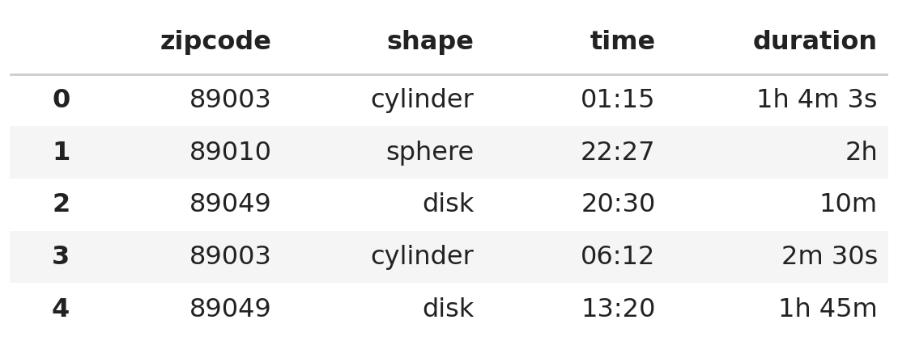
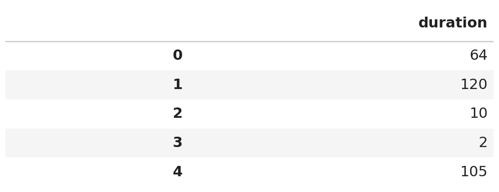
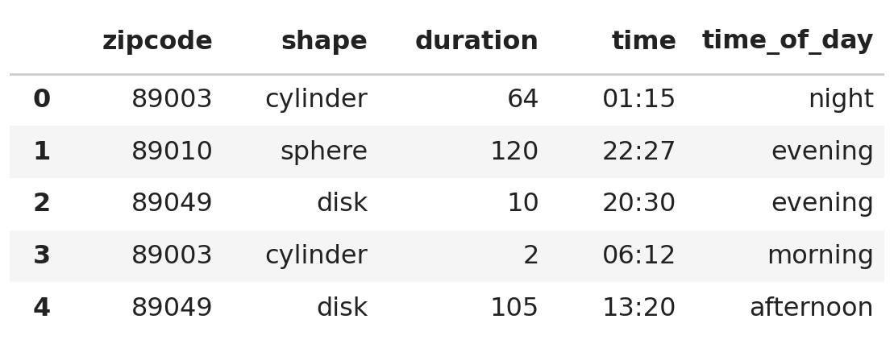
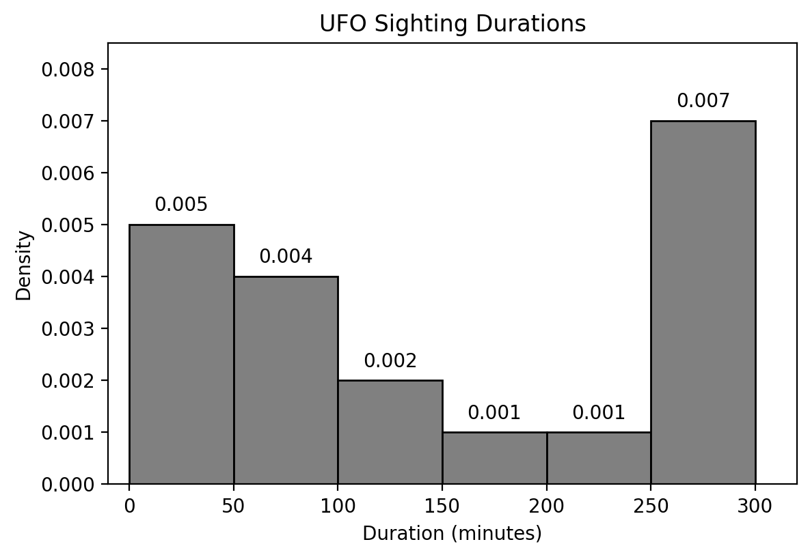
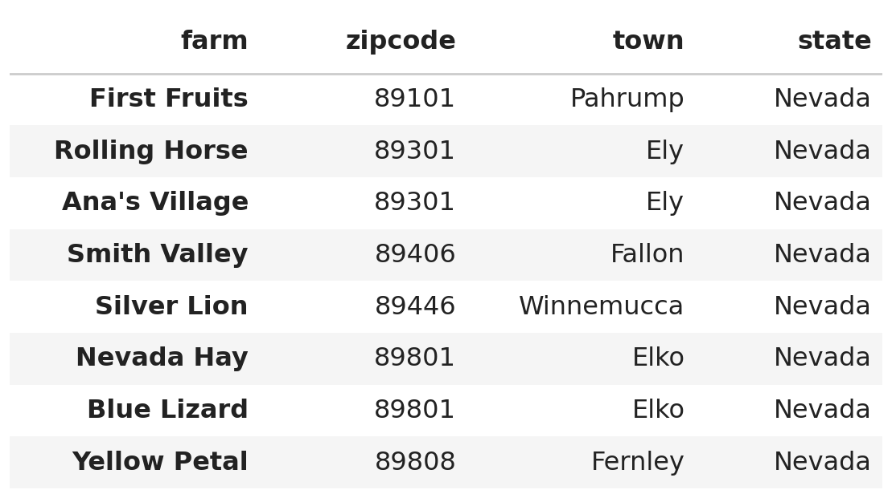
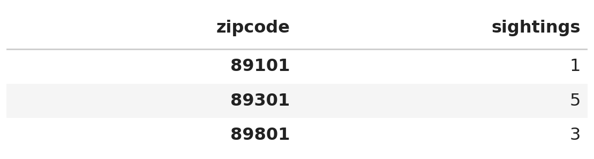

← return to practice.dsc10.com
Instructor(s): Janine Tiefenbruck
This exam was administered in-person. Students were allowed one page of double-sided handwritten notes. No calculators were allowed. The exam consisted of 8 questions worth 100 points total.
Note (groupby / pandas 2.0): Pandas 2.0+ no longer
silently drops columns that can’t be aggregated after a
groupby, so code written for older pandas may behave
differently or raise errors. In these practice materials we use
.get() to select the column(s) we want after
.groupby(...).mean() (or other aggregations) so that our
solutions run on current pandas. On real exams you will not be penalized
for omitting .get() when the old behavior would have
produced the same answer.
Unidentified flying objects (or UFOs) are objects seen in the sky that cannot be explained by the observer. These objects seem to be something other than planes, birds, etc. Some people believe that UFOs are actually extraterrestrial spacecrafts that suggest the possibility of alien life.
UFO sightings are reports describing where and when an individual
observed a UFO. The DataFrame ufo has one row for every
reported UFO sighting in the state of Nevada. The columns are:
"zipcode" (str): The zip code of the town
where the sighting was reported."shape" (str): The reported shape of the
UFO, either "cylinder", "sphere", or
"disk"."time" (str): The time at which the
sighting began, formatted as 24-hour time as "HH:MM"."duration" (str): How long the sighting
lasted, formatted using a combination of hours (h), minutes
(m), and seconds (s), e.g. "2m"
or "1h 45m 3s".The first few rows of ufo are shown below, though
ufo has many more rows than pictured.

Throughout this exam, we will refer to ufo repeatedly.
Assume that we have already run import babypandas as bpd
and import numpy as np.
Complete the implementation of the function minutes
which takes as input a single duration as a string and returns that
duration in minutes, as an int. Example inputs and outputs
are given below.
>>> minutes("22m")
22
>>> minutes("4m 45s") # seconds do not contribute to the output
4
>>> minutes("1h 31m 2s")
91Fill in blanks (i), (ii), and (iii).
def minutes(d):
total = 0
parts = __(i)__
for part in parts:
if part[-1] == "h":
total = __(ii)__
if part[-1] == "m":
total = __(iii)__
return totalAnswer (i): d.split(" ")
Answer (ii):
total + int(part.strip("h")) * 60
Answer (iii):
total + int(part.strip("m"))
The pieces of a duration are separated by spaces, so
d.split(" ") breaks the string into a list with one element
per piece. For example, "1h 31m 2s" becomes
["1h", "31m", "2s"].
The for loop then looks at the last character of each
piece to decide what unit it is measured in.
"h",
it’s a number of hours. Strip off the "h", convert what’s
left to an int, and multiply by 60 to convert hours to minutes. Add that to
the running total."m",
it’s already a number of minutes, so just strip the "m",
convert to an int, and add it to the running total.Notice there is no if statement for pieces ending in
"s". That’s intentional: seconds do not contribute to the
output, so those pieces are simply ignored.
Tracing through minutes("1h 31m 2s"): the piece
"1h" contributes 1 \cdot 60 =
60, the piece "31m" contributes 31, and the piece "2s"
contributes nothing, for a total of 91.
Complete the line of code to replace the "duration"
column in the ufo DataFrame so that
ufo.get(["duration"]) results in the DataFrame shown below
(only the first few rows are shown). Utilize the minutes
function you defined in part (a).

ufo = ufo.assign(__(i)__)Answer (i):
duration=ufo.get("duration").apply(minutes)
Assigning to a column name that already exists replaces that column, which is what we want here.
ufo.get("duration") is a Series of duration strings.
Calling .apply(minutes) on that Series runs the
minutes function on every element and returns a new Series
of the corresponding integers. Note that we pass minutes
without parentheses — we want to hand .apply the function
itself, not call it.
Since the new column is named duration, we write it as
the keyword argument duration=... inside
.assign.
For the rest of the exam, we’ll assume that ufo
contains the updated "duration" column.
The following four expressions are each intended to find the duration of the longest sighting in minutes. Select all that are correct.
ufo.take(np.arange(5)).get("duration").iloc[0]
ufo.get("duration").max()
ufo.sort_values("duration").get("duration").iloc[-1]
ufo.sort_values("duration", ascending=False).get("duration").loc[0]
Answer: Options 2 and 3.
ufo.take(np.arange(5)) keeps
only the first five rows, and .iloc[0] then grabs the
duration of the very first row. There’s no reason the first row would
hold the largest duration, so this is incorrect..max() on the
"duration" Series returns the largest duration directly.
Correct..sort_values("duration")
sorts in ascending order by default, so the largest
duration ends up in the last position, and .iloc[-1]
retrieves it. Correct..loc[0] looks up the element with index
label 0, not the element in position
0. Sorting rearranges the rows but carries the original
index labels along, so .loc[0] still returns the duration
of the row that was originally row 0. To make this work
we’d need .iloc[0] instead.Define the variables once and twice as
follows.
once = ufo.groupby("zipcode").count()
twice = once.groupby("shape").count()Determine the value resulting from the following expression. You may indicate that the value cannot be determined or the expression produces an error.
((once.get("duration") < 2) & (once.get("duration") >= 2)).sum()Answer: 0
The two conditions being combined are exact opposites of one another:
a number cannot be both strictly less than 2 and greater than or equal to 2 at the same time. Combining them with
& therefore produces a Series containing
False in every position, no matter what’s in
once.
Summing a Boolean Series counts the number of True
values, and since there are none, the result is 0. We don’t need to know anything about the
contents of ufo to answer this.
What can we conclude using only the
twice DataFrame? Select only one of the
options and in no more than three sentences, explain your
answer.
The zip codes where exactly 3 UFO sightings occurred.
The number of sightings for each UFO shape where exactly 3 distinct zip codes were reported.
The number of zip codes where exactly 3 distinct UFO shapes were reported.
The number of zip codes where exactly 3 UFO sightings occurred.
The number of sightings where the UFO shape was spherical.
Answer: The number of zip codes where exactly 3 UFO sightings occurred.
Work from the inside out.
once = ufo.groupby("zipcode").count() has one row per zip
code, and every column of once holds the same number: the
count of sightings in that zip code. In particular, the
"shape" column of once is a number of
sightings, not a shape.
So twice = once.groupby("shape").count() groups the zip
codes by their number of sightings. Its index is a number of sightings
and each entry counts how many zip codes had that many sightings.
Looking up the row labeled 3 in twice tells us
the number of zip codes where exactly 3
sightings occurred.
Here is the code that inspired the other options:
ufo.groupby("zipcode").count()ufo.groupby(["zipcode", "shape"]).count()ufo.groupby(["zipcode", "shape"]).count()ufo.groupby("shape").count()The "time" column in ufo describes the time
at which a UFO was initially sighted. The times are formatted in 24-hour
time which uses hours 00 through 23. For
example, 13:51 is the same as 1:51 PM.
We want to create a function named time_of_day which
takes in a time and returns the corresponding category, defined by the
table below.
| hour range | category |
|---|---|
| 00:00–04:59 | "night" |
| 05:00–11:59 | "morning" |
| 12:00–16:59 | "afternoon" |
| 17:00–23:59 | "evening" |
Example inputs and outputs are given below.
>>> time_of_day("00:00")
"night"
>>> time_of_day("13:37")
"afternoon"
>>> time_of_day("23:59")
"evening"Consider the following implementations for time_of_day.
Which of the following implementations are correct? Select all
that apply.
Implementation 1:
def time_of_day(time):
hour_part = int(time.split(":")[0])
if hour_part >= 17 or hour_part < 24:
return "evening"
elif hour_part >= 12 or hour_part < 17:
return "afternoon"
elif hour_part >= 5 or hour_part < 12:
return "morning"
else:
return "night"Implementation 2:
def time_of_day(time):
hour_part = int(time.split(":")[0])
if hour_part < 5:
return "night"
if hour_part < 12:
return "morning"
if hour_part < 17:
return "afternoon"
if hour_part >= 0:
return "evening"Implementation 3:
def time_of_day(time):
hour_part = int(time.split(":")[0])
if hour_part >= 17:
return "morning"
elif hour_part >= 12:
return "night"
elif hour_part >= 5:
return "afternoon"
else:
return "evening"Implementation 1
Implementation 2
Implementation 3
Answer: Implementation 2 only.
All three implementations extract the hour correctly with
int(time.split(":")[0]); the difference is in the
conditions.
or where they should use and. Every valid hour
satisfies hour_part < 24, so the very first condition
hour_part >= 17 or hour_part < 24 is
True for every time, and the function always
returns "evening".if returns immediately, reaching the second if
already guarantees hour_part >= 5, reaching the third
guarantees hour_part >= 12, and reaching the fourth
guarantees hour_part >= 17. So the one-sided comparisons
are enough, and the categories come out exactly as specified. (The final
if hour_part >= 0 is always True at that
point, so it behaves like an else.)"evening", not
"morning".Suppose we use a correct implementation of time_of_day
to add another column called "time_of_day" to the
ufo DataFrame. Every entry in the "time"
column has a converted value in the "time_of_day"
column.

Which type of data visualization should be used to compare
average duration to the original "time"
column? Select only one of the options.
line plot
scatter plot
bar chart
histogram
Answer: Line plot.
The "time" column is a sequence of times running from
00:00 to 23:59, so it behaves like a numerical
variable with a natural order. Here we’re plotting one average duration
per time, so we have one variable (average duration) measured across a
sequence — exactly the situation a line plot is designed for. Line plots
are the standard choice for showing how a quantity changes over
time.
A scatter plot would be used for two numerical variables measured on each individual, a bar chart for a categorical variable, and a histogram for the distribution of a single numerical variable.
Which type of data visualization should be used to compare
average duration to the new "time_of_day"
column? Select only one of the options.
line plot
scatter plot
bar chart
histogram
Answer: Bar chart.
Unlike "time", the "time_of_day" column is
categorical — it takes only the four values
"night", "morning", "afternoon",
and "evening". Bar charts are used to show a numerical
quantity (here, average duration) for each category of a categorical
variable.
A line plot would incorrectly suggest a continuous trend between categories, while scatter plots and histograms both require numerical data.
Janine was in Las Vegas last year when she spotted a UFO. She remembers that the UFO was either disk-shaped or cylinder-shaped, but she does not remember which.
Write a Python expression that evaluates to the time at which this sighting could have occurred. If there are multiple possible sightings matching these conditions, your expression should evaluate to the time of the earliest one.
The zip code of Las Vegas is "89109". The earliest time
is the one with the smallest hour value; ties are broken by the smallest
minute value (i.e. "00:10" is earlier than
"23:57", "04:10" is earlier than
"04:11").
Hint: Since "time" is a string in
"HH:MM" format, comparing these strings alphabetically
gives the same result as comparing them chronologically.
You may write on multiple lines, but your code should represent a single expression in Python.
Answer:
ufo[(ufo.get("zipcode") == "89109") &
((ufo.get("shape") == "disk") |
(ufo.get("shape") == "cylinder"))].get("time").min()We build this up one piece at a time.
ufo.get("zipcode") == "89109" is a Boolean Series that
is True for sightings in Las Vegas.(ufo.get("shape") == "disk") | (ufo.get("shape") == "cylinder")
is True for sightings of either shape Janine might have
seen. We use | (or) here, not &, since a
single sighting can’t be both shapes at once — requiring both would
leave us with no rows at all.& keeps only the
rows that satisfy both, and querying ufo with that Series
gives the DataFrame of candidate sightings.Note the parentheses around each individual comparison. They’re
required, because & and | have higher
precedence than == in Python.
Finally, .get("time") pulls out the times of those
sightings and .min() finds the smallest one. Thanks to the
hint, the alphabetically smallest "HH:MM" string is also
the chronologically earliest time, so .min() is exactly
what we want.
An equivalent approach sorts instead of using
.min():
ufo[(ufo.get("zipcode") == "89109") &
((ufo.get("shape") == "disk") |
(ufo.get("shape") == "cylinder"))].sort_values("time").get("time").iloc[0]The density histogram below was created using data in the
"duration" column of ufo.

Use the histogram above to determine the result of the following expression. You do not have to simplify your answer. Show your work.
ufo[(ufo.get("duration") >= 50) & (ufo.get("duration") < 150)].shape[0] / ufo.shape[0]Answer: (0.004 \cdot 50) + (0.002 \cdot 50) = 0.30
The expression counts the sightings whose duration is at least 50 minutes and less than 150 minutes, then divides by the total number of sightings. That’s the proportion of sightings in the interval [50, 150).
In a density histogram, the area of a bar equals the proportion of values that fall in that bin. The interval [50, 150) is covered exactly by two bins:
Adding the two areas gives 0.2 + 0.1 = 0.30, so 30\% of sightings fall in this range.
We want a better look at shorter duration sightings. Consider a
DataFrame short which only includes sightings that lasted
less than an hour. We plot short with the following
command:
short.plot(kind="hist", y="duration", bins=np.arange(0, 70, 10))What can we conclude using only the new histogram
and the number of rows in short? Select all that
apply.
The duration in minutes of the shortest recorded sighting.
The number of sightings that were exactly 20 minutes long.
The number of sightings that were strictly less than 30 minutes long.
The number of sightings that were at least 40 minutes long and strictly less than 50 minutes long.
The number of sightings that were over an hour.
Answer: Options 3 and 4.
The bins are np.arange(0, 70, 10), which gives the edges
0, 10, 20,
30, 40, 50, 60 — that is, the bins [0,
10), [10, 20), [20, 30), [30,
40), [40, 50), and [50, 60]. A histogram tells us the proportion
of values in each bin, and nothing about how the values are spread out
within a bin. Multiplying a proportion by the number of rows in
short converts it into a count.
short.short gives the
count.short only contains
sightings that lasted less than an hour, so sightings over an hour
aren’t in this histogram at all. We’d need information about the full
ufo DataFrame to answer this.The general rule: a histogram can answer a question only when the interval in the question lines up exactly with bin boundaries.
The DataFrame farms contains information about eight
Nevada farms. Each row includes the name of the farm as the index as
well as the "zipcode", "town", and
"state" of the farm. The DataFrame farms is
shown below in its entirety.

The DataFrame rural only contains zip codes which appear
both in ufo and farms. Each row in
rural contains the number of "sightings" that
occurred in ufo at a given zip code. The DataFrame
rural is shown below in its entirety.

What does mystery1 evaluate to? Give your answer as an
integer.
mystery1 = rural.merge(farms, left_index=True, right_on="zipcode").shape[0]Answer: 5
This merge matches the index of rural
(the zip codes 89101, 89301, and
89801) against the "zipcode"
column of farms. A merge produces one row
for every pair of matching rows, so we count the farms sitting in each
of rural’s zip codes:
89101: one farm (First Fruits) → 1 row89301: two farms (Rolling Horse, Ana’s Village) → 2 rows89801: two farms (Nevada Hay, Blue Lizard) → 2 rowsThat gives 1 + 2 + 2 = 5 rows in
total. The farms in 89406, 89446, and
89808 don’t appear because those zip codes aren’t in
rural.
What does mystery2 evaluate to? Give your answer as an
integer.
Hint: You do not need to know all of the rows in the
ufo DataFrame.
mystery2 = ufo.merge(farms, on="zipcode").shape[0]Answer: 17
This merge matches the "zipcode" column of
ufo against the "zipcode" column of
farms. Each sighting in a given zip code pairs with each
farm in that same zip code, so the number of resulting rows is
\text{(sightings in that zip code)} \times \text{(farms in that zip code)}
summed over all zip codes that appear in both DataFrames.
This is exactly where rural comes in: it lists the zip
codes appearing in both ufo and farms, along
with the number of sightings in each. That’s why we don’t need to see
all of ufo.
89101: 1 sighting
\times 1 farm =
189301: 5 sightings
\times 2 farms =
1089801: 3 sightings
\times 2 farms =
6Altogether, 1 + 10 + 6 = 17 rows.
Ray defines the probability of events regarding a single UFO sighting:
Recall a UFO may either be "cylinder",
"sphere", or "disk".
S is the event in which a UFO is sphere-shaped. What is the maximum possible value of P(S)? Show your work.
Answer: 0.1
Every UFO is exactly one of the three shapes, so the three events are mutually exclusive and together cover every possibility:
P(C) + P(D) + P(S) = 1
Substituting P(C) = 0.3 and rearranging,
P(S) = 1 - 0.3 - P(D) = 0.7 - P(D)
To make P(S) as large as possible, we want P(D) as small as possible. We’re told D is at least twice as likely as C, so
P(D) \geq 2 \cdot 0.3 = 0.6
The smallest allowed value is P(D) = 0.6, which gives
P(S) = 0.7 - 0.6 = 0.1
Marta learns the following about her rural town:
What is the probability that a UFO is sighted and at least one crop circle is created on any given night? You do not have to simplify your answer. Show your work.
Answer: 0.2 \cdot (1 - 0.7^5)
We need both things to happen, so we multiply the probability of a sighting by the probability of at least one crop circle given that a sighting occurred.
The probability of a sighting is 0.2.
For the second piece, “at least one” is easiest to handle through its complement, which is “no crop circles at all.” Each farm independently avoids a crop circle with probability 1 - 0.3 = 0.7, and since the five farms are independent, the probability that none of them gets a crop circle is
0.7^5
So the probability that at least one crop circle is created, on a night when a UFO is sighted, is 1 - 0.7^5.
Multiplying the two pieces together gives
0.2 \cdot (1 - 0.7^5)
Lauren is a rancher in a small town. She observes that every time a UFO is sighted, 5 different cows go missing (however, they always eventually reappear). There are 100 cows in town, and Lauren owns 23 of the 100 cows.
Complete the simulation below to estimate the probability that exactly two of Lauren’s cows are abducted after a UFO sighting. Assume the missing cows are selected at random from the set of all cows.
Fill in blanks (i), (ii), (iii), and (iv).
all_cows = np.arange(100)
repetitions = 10000
count_event = 0
for i in np.arange(repetitions):
abducted = np.random.choice(__(i)__)
laurens_cows = abducted <= __(ii)__
n = np.count_nonzero(laurens_cows)
if __(iii)__:
count_event = count_event + 1
prob = __(iv)__Answer (i):
all_cows, 5, replace=False
Answer (ii): 22
Answer (iii): n == 2
Answer (iv):
count_event / repetitions
all_cows. Since
the problem says 5 different cows go missing, we must
sample without replacement, hence
replace=False.all_cows is
np.arange(100), i.e. the numbers 0 through 99. Lauren owns 23 of them, and the natural way to label her
cows is as the first 23 numbers, 0 through 22. So a cow belongs to Lauren exactly when
its number is less than or equal to 22.
The comparison abducted <= 22 produces a Boolean array,
and np.count_nonzero counts the True values,
so n is the number of Lauren’s cows that were abducted.
Note that writing 23 here would incorrectly give Lauren
24 cows.n == 2. Writing n >= 2 would
answer a different question.